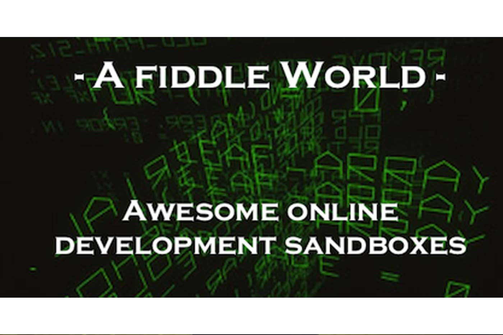
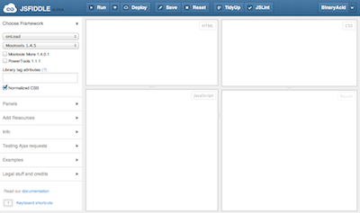
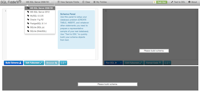
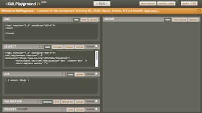
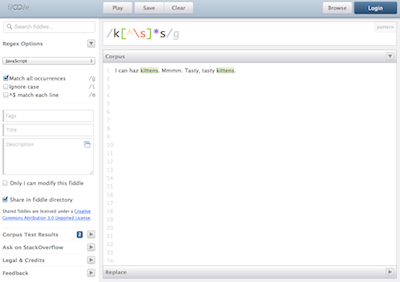

A Fiddle World: Online Development Sandboxes
Originally published at https://singularityhacker.com/a-fiddle-world-online-development-sandboxes

Several development sandboxes have popped up online in the last year that are well worth your time to check out. Dev sandboxes allow for bug isolation, test driving new libraries, sharing programming problems, and saving solutions for later referral. These are the top four.
jsFiddle - This is the king of online fiddles. Test html, css, and JavaScript in one convenient view. Includes build in versioning and the ability to add external scripts. jsFiddle is quickly becoming the standard of quality questions and answers on Stackoverflow.

sqlFiddle - Test SQL Server 2008, 2012, MySQL, Oracle, PostgreSQL, SQL.js, and WebSQL all from the comfort of your browser! I’m hating SQL just a little less all because of this testbed.

xmlFiddle - *A sandbox for XML development, including XSL, XPath, XQuery, Schema, DTD and RelaxNG.

reFiddle - Get down with with all your RegEx goodness at reFiddle. Works with JavaScript, Ruby, and .NET. Easily make fiddles public or private as well.

I hope you find these resources useful. Let me know in the comments how you are using them or plan to use them. Now..
*Note: This website is actually called XML Playground but I took the liberty of purchasing the xmlfiddle.com domain and forwarding it to the site.
Follow me on Twitter at @SingularityHackhttps://href.li/?http://www.cougaarsoftware.com/files/CSI_Agents101.pdf)